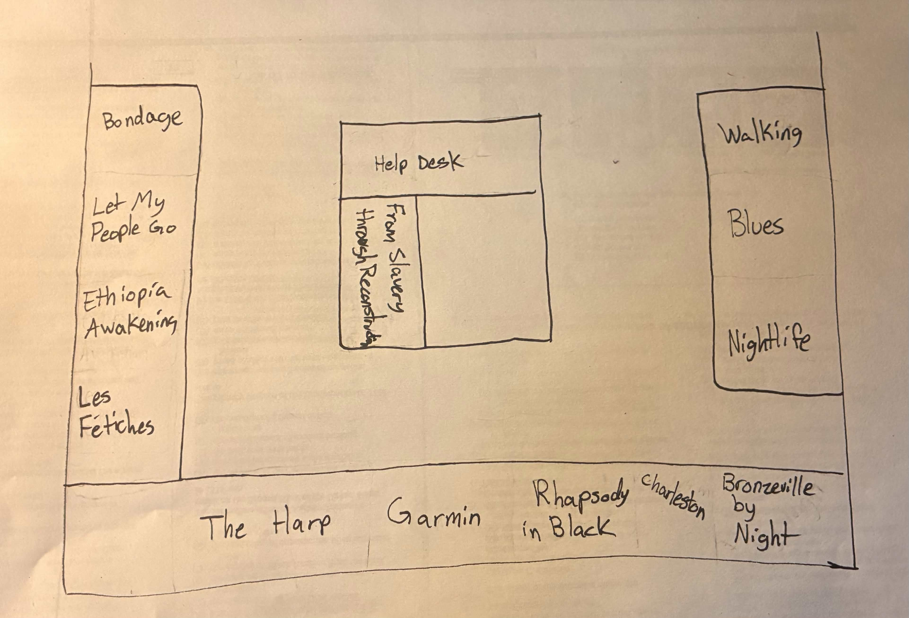

Exhibit Map
Visitors should experience the exhibit in chronological order of what that portrait is depicting. This is to show visitors the progression of African American culture from slavery to the Harlem Renaissance and how past experiences affected the development of a distinct culture. The painting From Slavery through Reconstruction is in the middle and separated from the rest of the artworks because it depicts an overall picture of the development of a distinct African American culture from slavery to the Harlem Renaissance.
